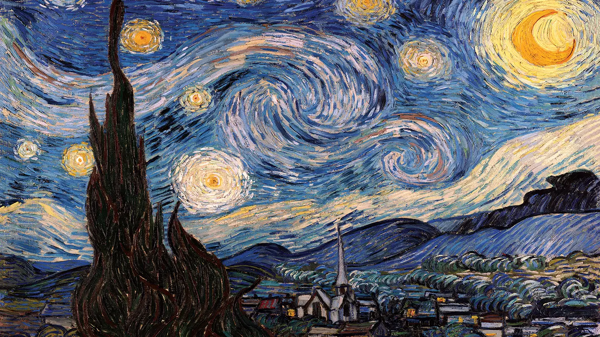

ความหมายและความสำคัญของศิลป์
ศิลปะคือการถ่ายทอดความคิด อารมณ์ และจินตนาการของมนุษย์ผ่านรูปแบบต่างๆ เช่น ภาพวาด ดนตรี หรือวรรณกรรม เพื่อสื่อสารความงามและสะท้อนมุมมองชีวิต มีความสำคัญอย่างมากในการช่วยผ่อนคลายจิตใจและยกระดับอารมณ์ให้ประณีต อีกทั้งยังช่วยกระตุ้นความคิดสร้างสรรค์อย่างไร้ขีดจำกัด ตลอดจนทำหน้าที่เป็นเครื่องมือบันทึกประวัติศาสตร์ สะท้อนวิถีชีวิตผู้คน และเชื่อมโยงสังคมเข้าไว้ด้วยกัน